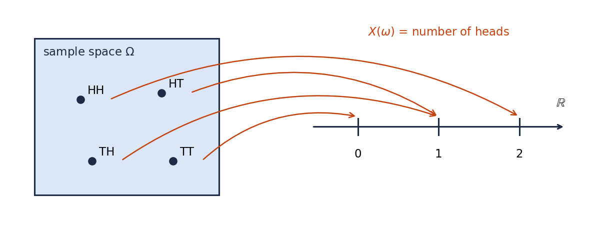
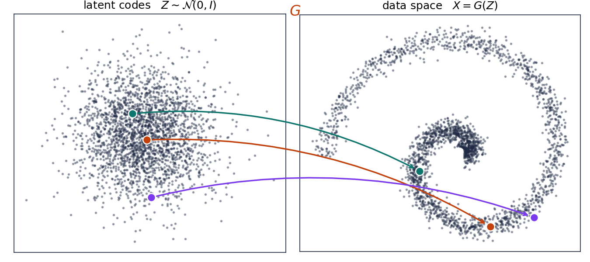

1. Random variables and distributions¶
Prerequisites: the big-picture page and a first course in probability.
This note builds three tools: the random variable, its distribution, and its density. Sections 1 to 4 build them on coins and dials, with no generative model in sight. Section 5 shows what they do for us: a generative model is a random variable, and the difference between a distribution and a density is the first reason diffusion models add noise to data.
1. A random variable turns outcomes into numbers¶
An experiment has a set of possible outcomes, the sample space \(\Omega\). An event is a set of outcomes, and a probability \(P\) gives each event a number between \(0\) and \(1\). It obeys two rules: \(P(\Omega) = 1\), and the probabilities of events that do not overlap add up.
Example. Toss a coin twice. \(\Omega = \{HH, HT, TH, TT\}\), each outcome with probability \(\tfrac14\). "At least one head" is the event \(\{HH, HT, TH\}\), with probability \(\tfrac34\).
Outcomes are not numbers, and we want to compute with numbers. A random variable does the conversion.
Definition (random variable)
A random variable is a function that assigns a number, or a vector of numbers, to each outcome:
Example. \(X\) = number of heads: \(X(HH) = 2\), \(X(HT) = X(TH) = 1\), \(X(TT) = 0\). Two different outcomes can share a value.

Events can now be described through \(X\): "at least one head" is \(\{X \ge 1\}\), the set of outcomes \(\omega\) with \(X(\omega) \ge 1\). In general, for a region \(B\) of values, \(\{X \in B\}\) is the set of outcomes that \(X\) sends into \(B\).
2. The distribution: how likely is each region of values?¶
Once we have \(X\), the question we care about is where does it land, and how likely is each place? The answer takes three steps.
- Pick a region \(B\) of values.
- Collect the outcomes that \(X\) sends into \(B\).
- Add up their probabilities.
Example. \(B = \{1, 2\}\). The outcomes sent there are \(HH, HT, TH\), so \(P(X \in B) = \tfrac14 + \tfrac14 + \tfrac14 = \tfrac34\).
Definition (distribution)
The distribution of \(X\) is the rule that gives every region \(B\) of values the number
We write \(X \sim P_X\), "\(X\) is distributed as \(P_X\)".
For the number of heads, doing the three steps for each single value is enough, since every region is made of values:
| value \(x\) | 0 | 1 | 2 |
|---|---|---|---|
| outcomes sent to \(x\) | \(TT\) | \(HT, TH\) | \(HH\) |
| \(P(X = x)\) | \(\tfrac14\) | \(\tfrac12\) | \(\tfrac14\) |
The table is the distribution: any other region is a sum of its entries.
A picture to keep: sand. Spread one kilogram of sand over the outcomes, a quarter on each. \(X\) carries every grain to \(X(\omega)\). Nothing is lost or created, so the sand on the right weighs one kilogram, and the sand in any region is exactly the sand that started on the outcomes sent there.
Is the distribution itself a probability?
It should obey the two rules of section 1 on the values, and it does.
- All values together. Every outcome is sent somewhere, so \(P_X(\R^d) = P(\Omega) = 1\).
- Regions that do not overlap. If \(B_1\) and \(B_2\) share no values, no outcome is sent into both, since an outcome has one value. So the two sets of outcomes do not overlap, and \(P_X(B_1 \cup B_2) = P_X(B_1) + P_X(B_2)\).
So once we know the distribution we can work with the values alone, as if they were the outcomes of a new experiment.
3. Writing it down: mass functions and densities¶
A table works when there are a few values. Two kinds of formula cover most cases.
Definition (probability mass function)
\(X\) is discrete if it takes finitely or countably many values. Its distribution is given by \(p_X(x) = P(X = x)\), and
The number of heads is discrete, and its mass function is the table above.
What about a quantity that can take any value in an interval? Spin a dial and let \(X\) be the angle where it stops, in \([0, 2\pi)\). The chance of stopping at one exact angle is zero, so every \(P(X = x)\) is \(0\) and a mass function says nothing. But an interval has probability equal to its length over \(2\pi\). Probability is spread out, like mass along a rod, and what we can describe is how thickly it is spread.
Definition (probability density function)
\(X\) is continuous if there is a function \(p_X \ge 0\), its density, such that
For the dial, \(p_X(x) = \tfrac{1}{2\pi}\) on \([0, 2\pi)\) and \(0\) elsewhere. The standard Gaussian has density \(p_X(x) = \tfrac{1}{\sqrt{2\pi}} e^{-x^2/2}\); Gaussians get a note of their own.
A density is not a probability. It can be larger than \(1\), and only its integral over a region is a probability. For a real-valued \(X\) there is also the cumulative distribution function \(F_X(x) = P(X \le x)\), with \(p_X = F_X'\) when a density exists. We will rarely need it.
4. Not every distribution has a density¶
Is every random variable discrete or continuous? No.
Example (points on a curve)
Let \(\Theta\) be uniform on \([0, 3\pi]\), and
Every value of \(X\) lies on a spiral curve \(C\), so \(P(X \in C) = 1\). If \(X\) had a density, then, because a curve has zero area and an integral over a set of zero area is zero,
a contradiction. So \(X\) has no density. It is not discrete either, since every single point has probability zero.
The same holds for anything concentrated on a lower-dimensional set: a curve in the plane, a surface in space. So two words have to be kept apart.
- Distribution: the rule \(B \mapsto P(X \in B)\). Every random variable has one.
- Density: a function \(p_X\) whose integrals give those probabilities. Not every random variable has one.
5. What we use them for¶
5.1 A generative model is a random variable¶
A generative model draws random numbers \(z\), usually from \(\N(0, I)\), and feeds them into a network \(G\). The output \(X = G(z)\) is a random variable in the sense of section 1: the outcomes are the random numbers, and \(G\) is the function. Everything of section 2 applies unchanged.

The probability that the model produces something in a region \(B\) is the probability of the seeds that \(G\) sends into \(B\). Drag the circle below and watch which seeds light up.
Two models whose outputs have the same distribution are, for us, the same model: no experiment on their outputs can tell them apart. So the goal of training is a distribution, not a particular \(G\): make the distribution of \(G(z)\) match the distribution of the data.
5.2 Real data has no density, and noise gives it one¶
Section 4 is not a curiosity. The toy data of this series is the spiral of section 4, and real data behaves the same way: if natural images lie on or near a lower-dimensional surface in pixel space, as many believe, the data distribution has no density. Then \(p_{\text{data}}(x)\) is not a function, and nothing that needs its values or its slope can be computed.
The fix is to add a little Gaussian noise.
Result (noise creates a density)
Let \(X\) be any random variable on \(\R^d\), let \(\varepsilon \sim \N(0, I)\) be independent of it, and \(\sigma > 0\). Then \(Y = X + \sigma\varepsilon\) has a density, positive and smooth everywhere:
In words: put a small Gaussian bump around every data point and average the bumps.
This is the first reason the noising half of a diffusion model is useful: it replaces a distribution we cannot differentiate with distributions we can.
Proof
Given \(X = x\), \(Y\) is a Gaussian centred at \(x\), so \(P(Y \in B \mid X = x) = \int_B \varphi_\sigma(y - x)\, \d y\). Average over \(X\), and swap the average with the integral, which is allowed because everything is non-negative:
By the definition in section 3, the inside of the last integral is a density for \(Y\). It is positive because \(\varphi_\sigma\) is, and smooth because an average of smooth bumps is smooth. Conditioning and averaging are treated properly in notes 2 and 3.
5.3 Can we write the model's density down?¶
Training will ask for the density of the model's output, \(p_X(x)\), at the data points. Section 2 tells us how to get the distribution of \(X = G(z)\) from \(G\). Whether a density formula follows depends on \(G\). If \(G\) is invertible and smooth, every \(x\) comes from exactly one seed, and the density follows from how much \(G\) stretches space around it. If not, as for most networks, the density is an integral over all the seeds that land near \(x\), which no one can compute. The session page on the ELBO is about getting around exactly that.
Code¶
The running example of the series is the spiral of section 4. The code is the random variable: the random number generator plays \(\Omega\), theta is the random input, and the arithmetic is the function. Every later model is trained on samples from sample_spiral.
"""The running example for the whole series: a 2D spiral.
A random variable is a function from a source of randomness to R^d.
Here the source is a NumPy generator and the function is `sample_spiral`.
The *law* of the random variable is what we will spend 45 notes modelling.
"""
import numpy as np
def sample_spiral(n: int, noise: float = 0.0, rng: np.random.Generator | None = None) -> np.ndarray:
"""Draw n points from the spiral law. Returns an (n, 2) array.
noise=0.0 gives points exactly on a curve (no density in R^2).
noise>0 adds isotropic Gaussian noise, which gives the law a density.
"""
rng = np.random.default_rng() if rng is None else rng
theta = rng.uniform(0.0, 3.0 * np.pi, size=n) # base variable Z ~ Uniform
r = 0.15 * theta # deterministic map G
x = np.stack([r * np.cos(theta), r * np.sin(theta)], axis=1)
return x + noise * rng.standard_normal(x.shape)
if __name__ == "__main__":
import matplotlib.pyplot as plt
rng = np.random.default_rng(0)
fig, axes = plt.subplots(1, 2, figsize=(8, 3.8), sharex=True, sharey=True)
for ax, sigma in zip(axes, [0.0, 0.1]):
pts = sample_spiral(3000, noise=sigma, rng=rng)
ax.scatter(pts[:, 0], pts[:, 1], s=2, alpha=0.5, color="#1f2a44")
ax.set_title(rf"$\sigma = {sigma}$" + (" (no density)" if sigma == 0 else " (has a density)"))
ax.set_aspect("equal")
ax.set_xticks([]); ax.set_yticks([])
fig.tight_layout()
fig.savefig("docs/assets/01-spiral.png", dpi=150)
print("saved docs/assets/01-spiral.png")
Notation. Capital \(X\) is the random variable and small \(x\) a value it can take. Later, following every paper, we write \(x_t\) for both, and \(p(x)\) for a density whenever one exists.